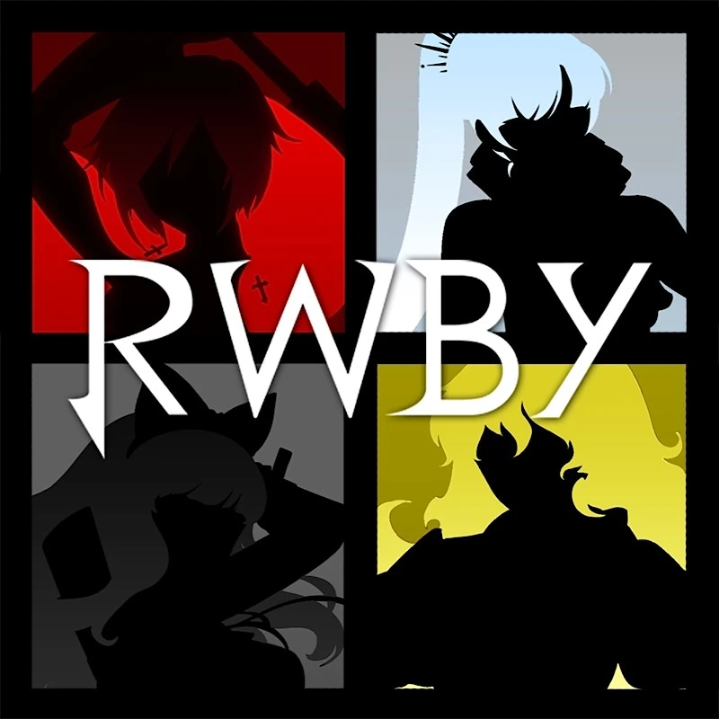
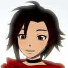
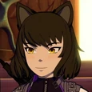
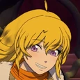

RWBY

RWBY (pronounced ruby) is an American multimedia franchise created by Monty Oum and currently produced by VIZ Media, originally by Rooster Teeth Productions. It originated as an anime-style web series.
Main Characters
|
 Ruby Rose |
Ruby Rose is the main titular protagonist of RWBY. She is a Huntress, having been trained at the now defunct Beacon Academy. Her weapon of choice is her High-Caliber Sniper-Scythe known as Crescent Rose, which she designed herself. |
Weiss Schnee |
Weiss Schnee is another titular protagonist of RWBY. She is a Huntress, a former student of the now-defunct Beacon Academy, and former heiress of the Schnee Dust Company. Her weapon of choice is a Multi-Action Dust Rapier (MADR) named Myrtenaster. |
|
 Blake Belladonna |
Blake Belladonna is another titular protagonist of RWBY. She is a Huntress, having been trained at the now-defunct Beacon Academy. Her weapon of choice is a Variant Ballistic Chain Scythe (VBCS) named Gambol Shroud. |
|
 Yang Xiao Long |
Yang Xiao Long is another titular protagonist of RWBY. She is a Huntress, having been trained at the now-defunct Beacon Academy. Her weapons of choice are a pair of Dual Ranged Shot Gauntlets, Ember Celica. |
Lore
The plot is centered around the four members of the titular Team RWBY – Ruby Rose, Weiss Schnee, Blake Belladonna and Yang Xiao Long. The series follows their meeting and training at Beacon Academy, a prestigious school for training Huntsmen and Huntresses, warriors who defend the world from evil.
Along the way, they make many friends and allies, including fellow students Team JNPR, Sun Wukong and Penny Polendina, and foil the plots of villains, such as Roman Torchwick, Cinder Fall and the terrorist group the White Fang. Eventually, they learn of the existence of an ancient witch named Salem and her inner circle that plot to destroy the Kingdoms, and that their Headmaster Ozpin opposes her with his own group.
However, as the series continues, Team RWBY must confront their own demons: Ruby is faced with moral dilemmas that challenge her heroic intent, Weiss must reconcile her legacy as heiress of the Schnee Dust Company with her own personal convictions while facing her father, Blake remains haunted by her past as a member of the White Fang and is forced to face some of her old friends, and Yang searches tirelessly for her mother, who left when she was a child while trying to overcome her trauma from the Fall of Beacon.